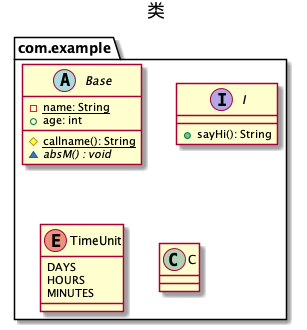
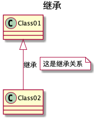
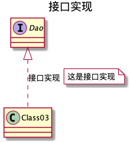
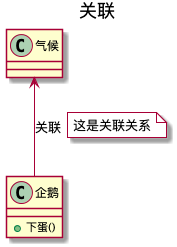
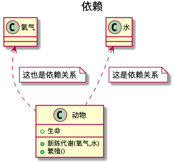
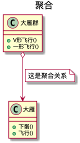

interface I { + sayHi(): String } enum TimeUnit { DAYS HOURS MINUTES } class C } @enduml
绘制出的图片如下

绘制类之间的关系
继承
<|--
子类指向父类 子类一定是知道父类定义的 但是反之不一定
1 2 3 4 5 6
@startuml title 继承
Class01 <|--Class02 : 继承 note right on link#white: 这是继承关系 @enduml

接口
<|..
1 2 3 4 5 6
@startuml title 接口实现 interface Dao Dao <|.. Class03 : 接口实现 note right on link #white: 这是接口实现 @enduml

关联
<--
作为方法参数或者返回值
1 2 3 4 5 6 7 8 9
@startuml title 关联 class 企鹅 { + 下蛋() } class 气候 气候<--企鹅 : 关联 note right on link #white: 这是关联关系 @enduml

依赖
<..
作为类中的一个属性
1 2 3 4 5 6 7 8 9 10 11 12 13 14
@startuml title 依赖 class 动物 { +生命 +新陈代谢(氧气,水) +繁殖() } class 氧气 class 水 水 <.. 动物 note right on link #white: 这是依赖关系 氧气<..动物 note right on link #white: 这也是依赖关系 @enduml

聚合
<--o
空器皿o可以放很多东西，has a 关系，独立生命周期
1 2 3 4 5 6 7 8 9 10 11 12 13
@startuml title 聚合 class 大雁 { +下蛋() +飞行() } class 大雁群 { +V形飞行() +一形飞行() } 大雁群 o--> 大雁 note right on link #white: 这是聚合关系 @enduml

组合
<--*
满器皿已经有实体存在 contains a 关系 相同的生命周期
1 2 3 4 5 6 7 8 9 10
@startuml title 组合 class 翅膀 class 鸟 { +羽毛 +下蛋() } 鸟 "1" *--> "2" 翅膀 note right on link #white: 这是组合关系 @enduml